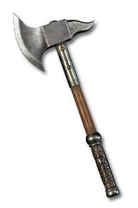
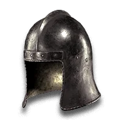
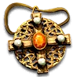
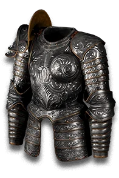
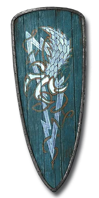
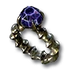
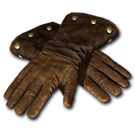
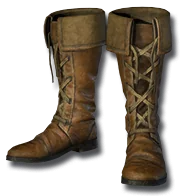

构筑模拟器 测试版 V 1.3.5
装备面板








护符背包
属性面板
属性
剩余属性点505
力量
20
敏捷
25
体力
20
智力
15
精魂0
生命与法力
生命306
生命回复0
法力162
法力恢复1.3
物理
伤害增强%0%
攻击命中率0
攻击速度0%
物理强化0
防御
防御力0
格挡%0%
攻击恢复%0%
施法速度0%
法术专注0%
其他
移动速度%0%
抗性
火焰抗性-70%
冰冷抗性-70%
闪电抗性-70%
毒素抗性-70%
物理抗性0%
魔法抗性0%
属性
力量25
敏捷20
体力30
智力15
生命与法力
生命606
法力162
抗性
火焰抗性-70%
冰冷抗性-70%
闪电抗性-70%
毒素抗性-70%
物理抗性0%
魔法抗性0%
常用技能
技能天赋页
已分配点数 0 剩余点数 110
左键加点，右键减点，shift + 左键加满点数，shift + 右键清空点数
佣兵没有主动技能树，仅需配置上方的装备面板与属性面板（力量 / 敏捷 / 体力 / 智力）。